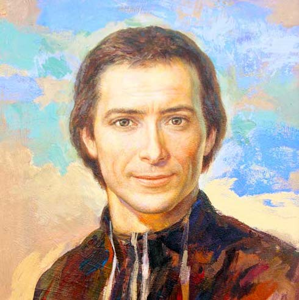
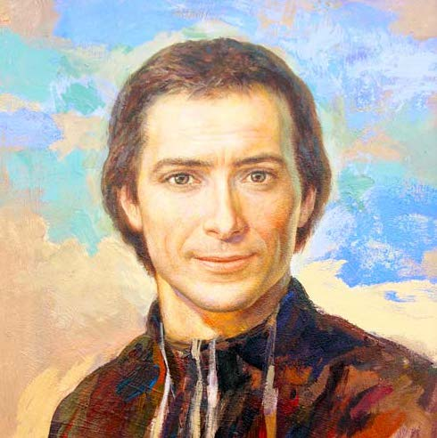

 |
|||||
|---|---|---|---|---|---|
DESCRIPCIÓN |
ACTIVIDADES ESCOLARES |
NOTICIAS Y EVENTOS |
DEPORTE |
CANCIONERO |
JUEGO |
VISIÓN
Nos sentimos impulsados por el espíritu a construir,junto a los sectores de Chile y Perú,una provincia "MARISTA "Nueva",segun las claves de nuestro último Capítulo General y la Misión Continental de Aparecida. En cada una de nuestras presencias, fomentaremos de fraternidad donde se comparta vida, fé y mision y evangelizaremos desde la educacion a los niños y jóvenes, en forma prioritaria a los que están en situación de pobreza y vulnerabilidad.
MISIÓN
Somos hermanos, laicos y laicas, discípulos de Jesucristo, al estilo de Maria y Champagnat.Formamos parte de la provincia Santa María de los Andes, desde las posibilidades y los retos que la multiculturalidad de Bolivia nos ofrece.En comunión con la iglesia boliviana queremos dar a conocer a Jesucristo y hacerlo amar a los niños y jovenes,preferentemente pobres para que sean buenos cristianos y honrados ciudadanos, a través de la eduación formal, no formal e informal y de otras instancias de evangelización.

DESCRIPCIÓN
COLEGIO MARCELINO CHAMPAGNAT II |
|
|---|---|
COLEGIO |
ESTUDIANTES |
 |
 |
 |
 |
 |
 |
 |
 |
UNIDAD EDUCATIVA MARCELINO CHAMPAGNAT |
||
|---|---|---|

ACTIVIDADES ESCOLARES | |
|---|---|
NOTICIAS Y EVENTOS
FELIZ AGASAJO DEL ESTUDIANTE
Para empezar, el día del estudiante es un acontecimiento de festividad que se da cada año para celebrar a todos los estudiantes ya sean niños, adolescentes o universitarios, pues premiando así todo su esfuerzo.
Los bailes de los profesores estuvieron muy divertidos. Necesitaban un poco más de organización e ideas para entretener a los alumnos... Tal vez en los próximos años puedan tomar esto en cuenta. Queremos a los profesores y no nos quejamos de las cosas que intentan hacer, solo tratar de ayudarlos sobre este tema en particular.
JUNTOS POR LA CHIQUITANÍA
El día 23 de septiembre en la unidad educativa Marcelino Champagnat, se realizo un pequeño acto conmemorativo por el aniversario de nuestra bella Santa Cruz el cual inició entonando el himno cruceño, donde seguidamente se dió palabras alusivas a la fecha para luego finalizar con la representacion de algunas danzas típicas de las provincias de Santa Cruz.
| A continuación se mostrará los bailes que realizó la promoción por el aniversario de Santa Cruz y especialmente para demostrar nuestro apoyo por la chiquitanía. |
<¡FELICIDADES SANTA CRUZ!
El dia 25 de Septiembre se realizó el homenaje a nuestra querida Santa Cruz de la Sierra con cantos y bailes proporcionados por nuestros estudiantes.
Todos de manera creativa y alegre,recordaron la época de antaño vistiendo su traje típico (tipoy-camisa blanca-pantalon blanco)
¿QUÉ PASA CON EL MÓDULO?
Hasta el día de hoy podemos ver que el Módulo Marcelino Champagnat no funciona pese a que ya se realizó su inaguración. El motivo por el cuál el Módulo no está siendo utilizado, es por falta de inmuebles (pupitres, mesas, escritorios) y por más que se busca solución, La Alcaldía no ha brindado una respuesta de ayuda al problema presente.
Esperamos que para el próximo año ya se encuentre con las condiciones necesarias para poder ser utilizado, con el propósito para el que fue creado.


|
LA MEJOR PROMO SE NOS VA

DEPORTE
Está es la página de deporte del colegio marcelino champagnat donte te mantendremos informado sobre todas las actividades deportiva que ha sucedido en el colegio. En el colegio Marcelino Champagnat es muy importante el deporte tanto para niños como para el nivel secundario y les gusta participar en campeonatos, etc.

CAMPEONATO DE LAS PLURINACIONALES
Como se sabe fueron a jugar en las plurinacionales varones y damas del turno de la tarde la disciplina de futsal. Pero lamentablemente en los juegos plurinacionales 2019 nuestra unidad educativa no pudo pasar o clasificar a la fase de grupos tanto en varones como en damas. En su debut los varones perdierón 3-2 con el colegio Republica de Colombia lamentablemente por un penal en la última jugada por el capitan (jorge andres warnes).

Selección Varones
| 1.- Jorge Warnes (6to Secundaria) |
| 2.- Marco Lara (6to Secundaria) |
| 3.- Marco Bernal (5to Secundaria) |
| 4.- Augusto Justiniano (5to Secundaria) |
| 5.- Bruno Yabeta (5to Secundaria) |
| 6.- Rafael Ramirez (5to Secundaria) |
| 7.- Cristopher Saucedo(5to Secundaria) |
| 8.- Sebastian Flores ( 4to secundaria) |
| 9.- Miguel Costaleite ( 4to secundaria) |
| 10.- Marco Warnes ( 3ero de secundaria) |
Comentarios:
Jorge A. Warnes (Capitan): "Hubo mala suerte......Me voy triste de la promo, queria llegar más lejos, estaba pintudo el uniforme.
Me quedo con la espinita de que nos falto un gol para pasar de fase"
Marco A. Lara (jugador):"Ese partido lo perdimos porqué no entre de titular y a mi parecer los jugadores no entrarón de inicio no estaban enfocados en el partido, pero como decimos en el futbol:Estaban durmiendo,les faltaba garra y sudar la camiseta, pero bueno fue decisión del profe y hay que respetar."
Bruno Yabeta (Arquero) "Es una lastima que no hubieramos logrado pasar de fase, el esfuerzo y las ganas estuvierón siempre, pero a veces las cosas no se dan, nos faltó un poco de suerte, podíamos haber llegado más lejos, teniamos equipo para más, pero ya está solo queda esperar al año que viene e intentar hacerlo mejor. "

Despedida con Victoria
En el segundo encuentro de la selección del colegio Marcelino Champagnat II obtuvierón una contudente victoria sobre la selección del Modulo Victoria Diez la cual ganarón el partido 8-3, sin embargo no les alcanzó para pasar de fase porqué se tomaba en cuenta la diferencia de goles pero no les alcanzo ya que solo falatabat 1 gol para poder pasar a fases.
Selección Femenina
La Unión Hace la Fuerza
Mientras tanto en la selección femenina Marcelino Champagnat II de la cual se esperaba mucho por lo que ellas si sudaban la camiseta, y lo dejaban todo en cancha y lo demostraban en todos sus partidos amistosos. Perdió sus primeros 2 partidos: 2-0 contra e colegio Cáritas y 2-1 contra la selección femenina del Colegio República de Colombia. y se despidierón con una victoria 2-1 frente al Módulo Victoria Diez (Damas) siendo eliminadas tras quedar de terceras en su grupo.

| 1.- Daniela Añez (promoción) |
| 2.- Fabiana Serrudo (promoción) |
| 3.- Lizbeth Vallejos (promoción) |
| 4.- Iria Carballo (promoción) |
| 5.- Natalia Rojas (pre-promo) |
| 6.- Adriana de la Via (pre-promo) |
| 7.- Nadia Morón (pre-promo) |
| 8.- Nicol Mendez (4to. secundaria) | 9.- Nahomi Cortez (4to. secundaria) | 10.- Valery Guzmán (4to. secundaria) |
Comentarios:
Fabiana Serrudo (jugadora): "Lo bueno fue que los entrenamientos han sido mejor que el año pasado, y que con las nuevas integrante nos entendiamos muy poco pero se hizo lo posible. Y lo bonito fue que nos divertimos y fue una gran experiencia."
Lizbeth Vallejos (jugadora): "Fue una gran experiencia....
Disfrutamos cada partido a pesar de algunas derrotas hubo unión en el equipo."

CANCIONERO
BUENA MADRE

Buena Madre estoy aquí, quiero rezar, te quiero hablar.
Buena Madre has sido tú, con sencillez, creyente fiel.
En tu regazo quiero estar, cerca de ti;
como un pequeño te daré todo ser.Acéptalo.
BUENA MADRE, NUESTRA BUENA MADRE;
BUENA MADRE, NUESTRA BUENA MADRE.
Buena Madre,veo en ti a la mujer llena de Dios.
Buena Madre,por la fe, sabes vivir la oscuridad.
Mira a tus hijos caminar, buscando luz.
Mira la angustia y el dolor. Danos tu fe. Acógenos.
LA FAMILIA DE MARIA

Formamos la familia de María,
Tenemos sencillez de corazón
la madre nos acoge en su regazo,
y lleva nuestras vidas hacia Dios.
Marcelino nos dejó como
herencia generosa
el amor de los hermanos
por encima de las cosas.
Marcelino nos dejó
como ciencia verdadera
el amor que Dios nos tiene,

el mas grande de la tierra.
Marcelino nos dejó
el mejor de los tesoros,
compartir con el hermano
las tristezas y los gozos.
Marcelino nos dejó
como fuente siempre viva
humildad y sencillez
y modestia en nuestras vidas